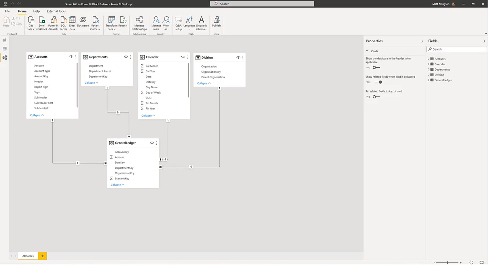

Home
Implement InfoRiver for Best Fabrics - Build Income Statement, Balance Sheet, Cash Flow Statement
Prerequisites
- Does the InfoRiver Blog have any help related to reporting on Microsoft Business Central?
- Build a P&L / income statement report in Power BI in less than 5 minutes - InfoRiver Blog
- Brainstorm with Belinda before I start this project.
- Work with Belinda to investigate pricing and subscribe if possible.
- Work with Belinda to establish a data connection to Business Central for Fabric Warehouse
- Build a Financial Statement in Power BI using Fabric Warehouse Data.
- List of Reasons Belinda does not recommend building Financial Statements using Power BI without a 3rd
Party Visual
- No easily printed financial statement.
- Lots of maintenance.
- DAX for percentages is complicated. Client would never learn how to make changes.
- Subtotals and Totals, Gross Profit, Net Profit, Department Totals, etc.
- Formatting the sign to show Credits as positive numbers.
- Confirm you are using the correct Business Central DB.
- Which Fabric Warehouse DB is the one to use for latest data? Fabric Warehouse
2024
- Fabric Warehouse has 1541 records in the General Ledger Entries Table.
- Fabric Warehouse 2024 has 4308 records in the General Ledger Entries Table.
- Fabric Warehouse 2024 has 48 records in the Chart of Accounts Table.
- Fabric Warehouse has ?? records in the Chart of Accounts Table.
Reference Materials
- InfoRiver QuickStart Guide
- Build your first P&L / Income
statement in Power BI in less than 5 minutes
- InfoRiver QuickStart
Guide - Download
- InfoRiver.com
- InfoRiver Demos
- InfoRiver Blog
- InfoRiver Webinars
- InfoRiver Community
Training
- Consider building this the way Dave is trying or maybe get the InfoRiver product if it is affordable.
Specifically the columns.
- Balance to the statements in Business Central that Ekta built.
Implementation
Load Belinda's Calendar from Knowledge Base
- See Calendar instructions in Knowledge Base.
generalledgerEntries as General Ledger Entries
- Rename Query to General Ledger Entries
- Correct Data Types
- Select and Rename Columns
- entryNumber as Entry Number
- postingDate as Posting Date
- documentNumber as Document Number
- documentType as Document Type
- accountNumber as Account Number
- description as Account Description
- debitAmount as Debit Amount
- creditAmount as Credit Amount
- Change the Date format in the General Ledger Entries for Posting Date to short
date.
- Change the Date format in the Date Table for Date and Week Ending
- I changed the data type for Account Number to Whole number for Chart of Accounts,
Departments, and
General Ledger Entries.
Create a Departments Table
- In Business Central, the Account Category and the Account Subcategory are both in the Accounts
Query.
- Duplicate the Chart of Accounts and rename to Departments.
- Manage Business Central account categories. G/L Account Categories
- Transform Data
- How do I make this only show the Sub Categories? Distinct
- ...
Create an Accounts Table
- Duplicate the Chart of Accounts and rename to Accounts. In the case of mom's Bank Account
export,
duplicate the Fact Table.
- Manage Business Central account categories. G/L Account Categories
- Transform Data
- ...
- number as Account Number
- displayName as Display Name
- category as Category
- subcategory as Sub Category
- accountType as Type
- Account number stays as text because you do not know if someone has a leading zero or a
alpha
character or a dash.
- Type filtered to Posting
Data Model
- Date Table to General Ledger Entries
- Chart of Accounts to General Ledger Entries
- Departments to General Ledger Entries

Proof Statements
- Export data from Business Central to Excel. Model into a set of statements and compare to InfoRiver
Statements.
- ...
Marketing and Sales Ideas for InfoRiver Financial Statements
- Does InfoRiver has any helpful sales literature?
- Monthly posting of Financial Statements build with BC and Cronos posted to LinkedIn
- ...